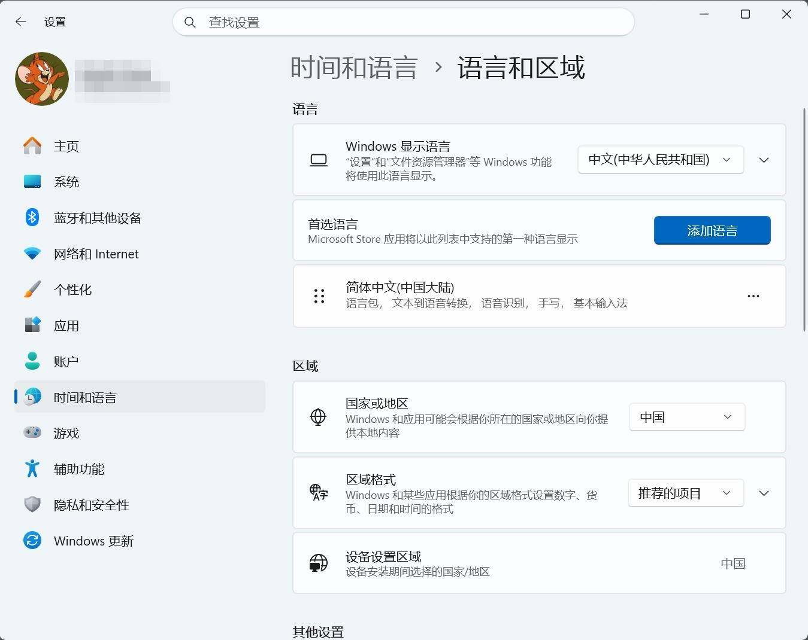
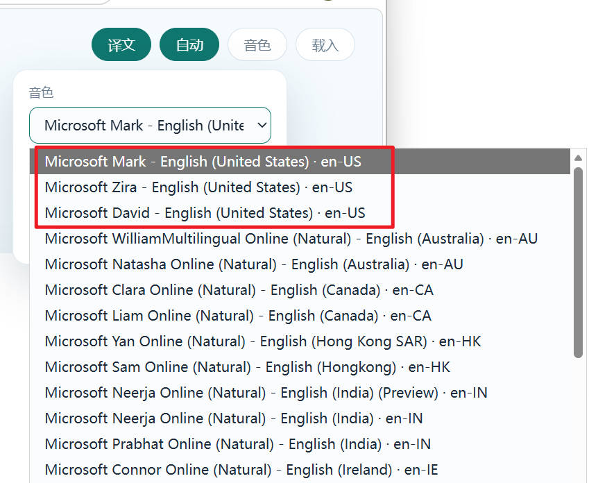
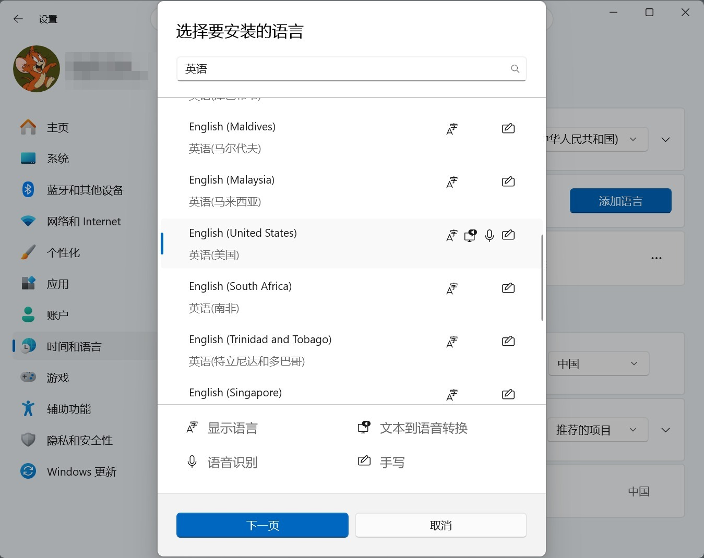
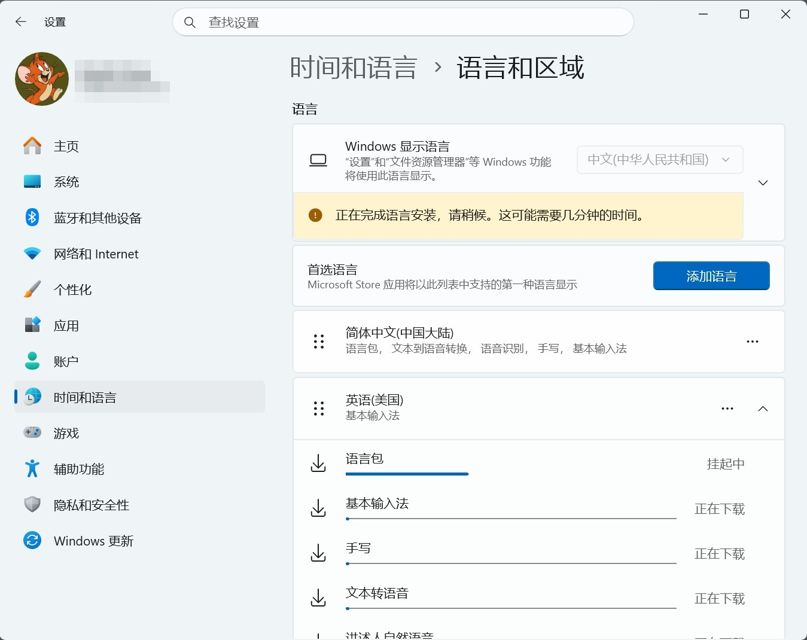

① 语言和区域

打开 设置 → 时间和语言 → 语言和区域。图里系统只有简体中文，所以英语语音还没装。
纯浏览器英语阅读器：AI 生成的 JSON 文章，逐句朗读、逐词查义、听力遮挡。无后端、无安装、断网可用。
http://u32-english-reader.u32.cn/ → 顶部「载入」直接进入浏览窗口 → 展开书、点文章 → 「载入」开读。想读自己的文章：窗口左下「手动导入 JSON」，粘贴 AI 生成的 JSON 或直接拖 .json 文件进页面。index.html 同样可用）。.json 文件拖到页面任意位置。点顶部「载入」直接进入浏览窗口，目录是四级树：资料库 → 系列 → 书 → 文章。资料库与系列默认展开、书默认折叠，点书展开文章；点文章选中后按右下「载入」，或直接双击文章。顶部过滤框跨四级搜索，输入即筛，命中路径自动展开。
窗口底部还有两个按钮：
.json 文件，也在这里复制 AI 提示词。导入成功后直接进入阅读。library.json 索引的网址，会先校验再保存（存浏览器本地）。默认库是本项目的 library/ 目录，可作为格式示例，规范见 library/README.md。index.html 打开时浏览器禁止读取本地文件，此时资料库不可用，手动导入 JSON 仍正常。适合配合本地 HTTP 服务使用：阅读页地址后加 ?src=<JSON 的 URL>，页面会自动 fetch 并载入，失败只在页内提示、不白屏。注意 src 必须是同源绝对 URL；同名文件重复载入可能命中浏览器缓存，可在 URL 后加 ?t=<时间戳> 绕过。
完整规范和可直接复制的 AI 提示词见 schema.md。最小结构：
{
"title": "文章标题",
"sentences": [
{ "en": "English sentence.", "zh": "中文翻译。",
"words": { "english": { "zh": "英文的", "pos": "adj.", "ipa": "/ˈɪŋɡlɪʃ/" } } }
]
}
examples/demo.json。按 空格 朗读当前句，朗读进行到哪个词，哪个词就高亮。
顶栏「自动」开关：打开后每翻到一句就自动朗读，适合连续听读。状态会记住。
顶栏「译文」开关：控制当前句中文翻译的显示与隐藏。
顶栏「遮挡」开关：用磨玻璃盖住英文原文，译文不受影响。先看中文回想英文，再点开验证，做听力/回译训练。状态自动记住。
点击正文任意单词：立即发音，同时弹出词卡，含上下文义项、词性、音标和重听按钮。词表里没收录的词也能发音，只提示「无释义」，不会崩。
顶栏「音色」弹层里选系统英语语音、拖动语速（0.5×–2.0×）。↑ ↓ 也能调语速（每次 0.1×，带状态提示）。设置自动记住，下次打开沿用。
读到第几句、遮挡/译文/自动开关、音色、语速都存在浏览器 localStorage 里，刷新和重开浏览器都恢复。
浏览器控制台（F12）默认输出 [LIGHT] 日志，覆盖状态恢复、音色选择、按键与错误，排查问题直接看它。
| 按键 | 作用 |
|---|---|
| → | 下一句 |
| ← | 上一句 |
| ↑ | 语速 +0.1×（上限 2.0×） |
| ↓ | 语速 −0.1×（下限 0.5×） |
| 空格 | 朗读当前句（长按不会重复触发） |
| Esc | 依次关闭：资料库弹窗 → 载入面板 → 音色弹层 → 词卡 |
| Enter / 空格（词卡上的词获得焦点时） | 打开该词的词卡 |
| 鼠标滚轮 | 下滚下一句、上滚上一句（一次滚动只翻一句，触控板惯性不会连翻） |
网页朗读用的是浏览器向系统要来的语音，不同浏览器默认情况不一样，但症状都一样：慢，或者干脆没声。
| 浏览器 | 默认语音情况 | 症状 |
|---|---|---|
| Edge | 默认带 Online (Natural) 在线语音，每次朗读都要联网请求微软服务器 | 点播放后半天才出声；断网直接没声音 |
| Chrome | 只有内置的「Google 普通话/英语」语音，走谷歌服务器，中国国内通常根本连不上 | 选它朗读直接无声或报错；音色列表里几乎没有本地英语音色 |
Microsoft Mark / Zira / David（en-US，名字里没有 Online），朗读就不走网络——Edge 里摆脱在线延迟，Chrome 里从「完全没声」变成正常朗读。Microsoft Mark - English (United States) · en-US（男声，推荐），或 Zira（女声）、David。
en-US，断网也能读。
打开 设置 → 时间和语言 → 语言和区域。图里系统只有简体中文，所以英语语音还没装。

点「添加语言」→ 搜 English → 选 English (United States) → 下一步。

勾 语言包 + 文本到语音。语音识别、手写不需要可取消；别勾「设为显示语言」。

点「安装」，等进度走完。之后关闭并重开 Chrome / Edge，再打开页面音色列表。
它们正是慢的来源，断网还会直接没声音。
Online (Natural)，延迟不可控，不建议用。Microsoft Mark。体感差异：Edge 在线音色点下播放后有「等一下」的首字延迟，本地音色几乎立刻起声；Chrome 装好语音包前选 Google 语音是完全无声，装好后选 Mark / Zira 立刻有声。
示例数据是兜底显示。点顶部「载入」，粘贴你自己的 JSON 或选择 .json 文件后点「载入」即可覆盖；也可以把 .json 直接拖到页面上。
按顺序检查：顶层必须有 title 和 sentences 数组；每个 sentence 必须有 en 字符串；words 的键必须是小写词形；粘贴的内容不能带 markdown 代码块标记（```json）。对照 schema.md 逐条核对。
分浏览器看：Chrome 默认的 Google 语音在国内通常连不上，选它必无声——按上方「从零安装英语语音」装本地语音包后改选 Mark / Zira。Edge 无声则多半是选了 Online 音色且断网，或系统没装英语语音包。装完记得重启浏览器。另外检查系统音量和标签页是否被静音（标签页右键 → 取消静音）。
当前选的是 Online 在线音色，每次朗读都要联网请求。换成本地音色（Mark / Zira / David）即可，见上方「离线语音」一节。
焦点不在正文上。常见于刚点过按钮或输入框：点一下页面空白处再按。载入面板打开时快捷键也会被忽略，先 Esc 关闭。详见「快捷键」一节的失效场景说明。
设置存在浏览器 localStorage。隐私/无痕模式、或浏览器设置了「关闭时清除站点数据」会导致记不住；换浏览器或换设备也不会同步。用正常窗口打开即可。
该词不在文章的 words 词表里。发音始终可用；要出释义，让 AI 生成 JSON 时把这个词补进对应句子的 words 映射，键用小写词形。
句子的切分由 JSON 决定。生成时在提示词里要求 AI 按自然句切分，别把整段塞进一个 en。已经生成的文件也可以手动把长句拆成多条 sentence。
?src= 自动载入没生效？检查三点：src 必须是绝对 URL；必须与页面同源（跨域会被浏览器拦）；同名文件可能命中缓存，在 src 的 URL 后加 ?t=<时间戳> 试试。失败时页面会提示，不会白屏。
完整规范 + AI 提示词模板见 schema.md。核心约束：
title（字符串）+ sentences（数组，必填）en（英文句，必填）、zh（中文翻译）、words（生词表）words 结构："小写词形": { "zh": "义项", "pos": "词性", "ipa": "音标" }examples/demo.json；页面内置的同份数据在 assets/demo.js轻读 · LIGHT — 纯浏览器英语阅读器 · MIT License · 语音文档依据 Microsoft 支持文档 Appendix A （英语本地 TTS：David、Mark 男声，Zira 女声）
点击空白处或按 Esc 关闭